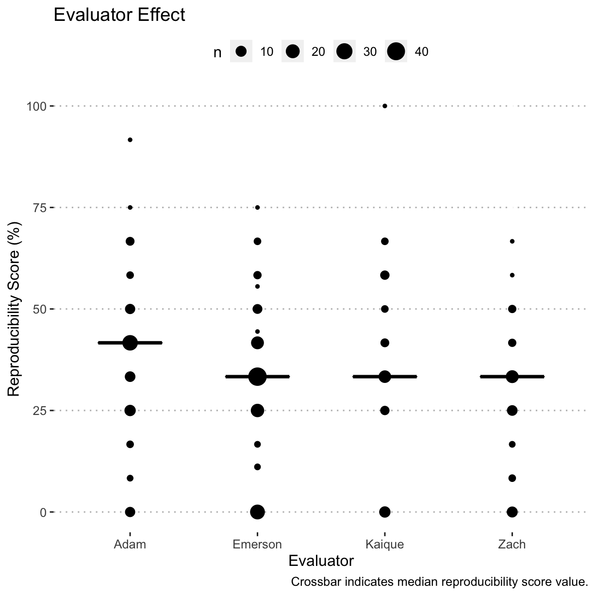
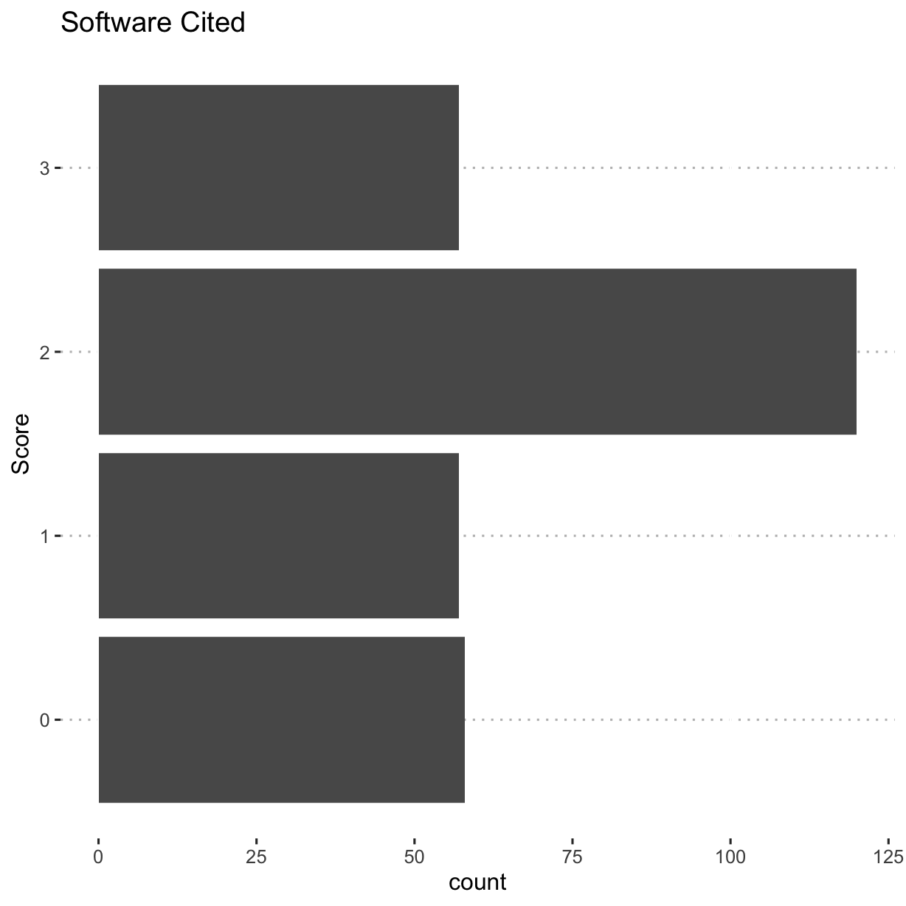
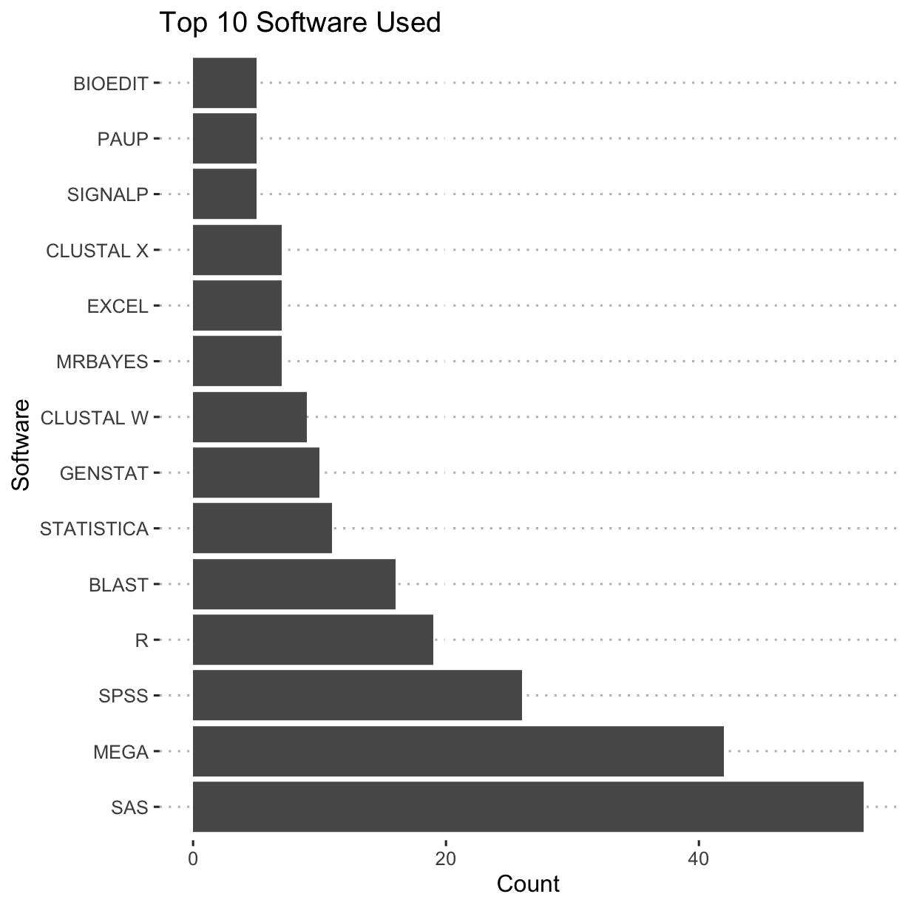
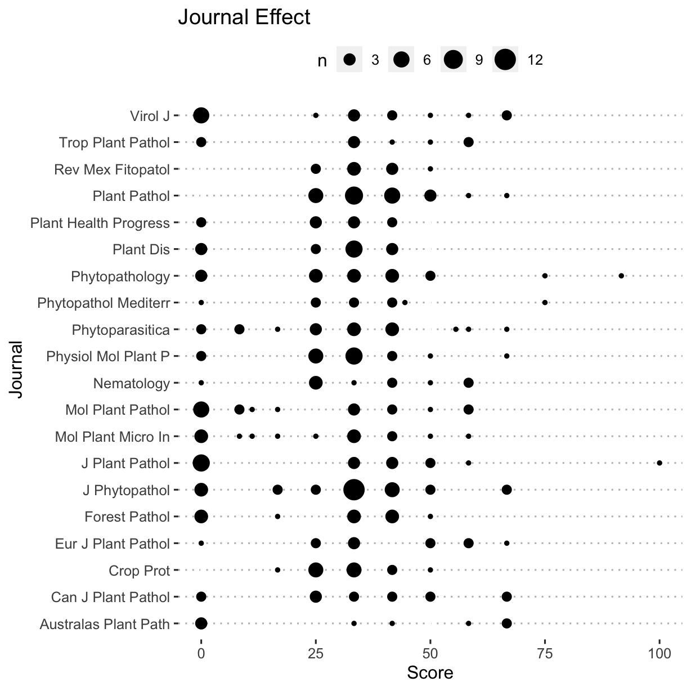
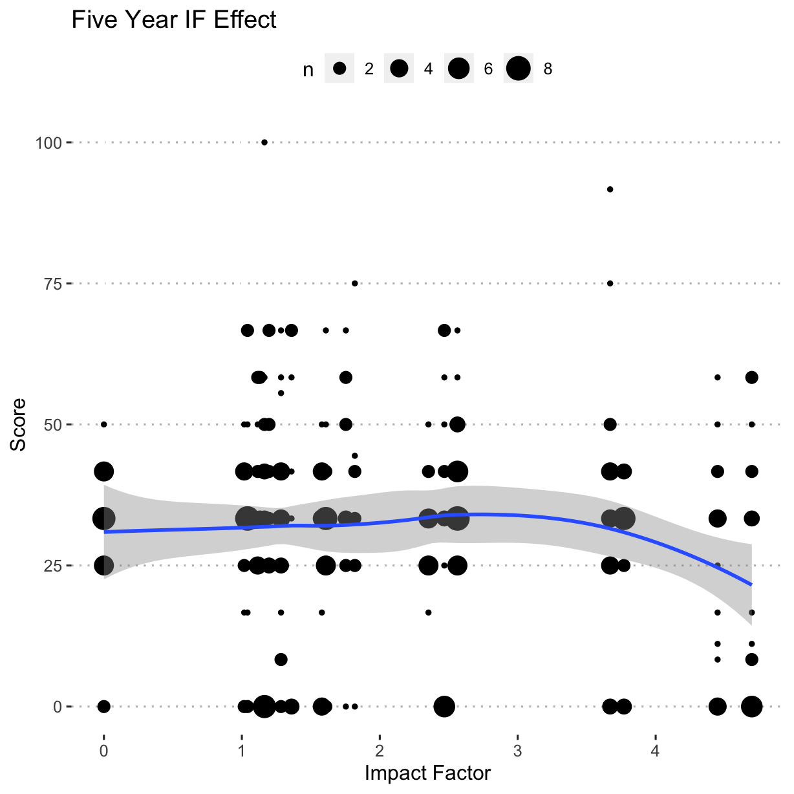
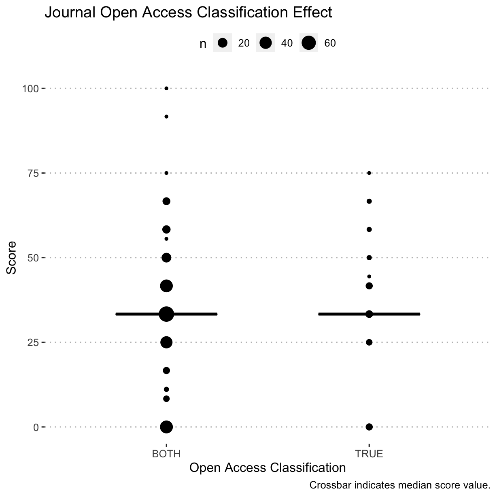
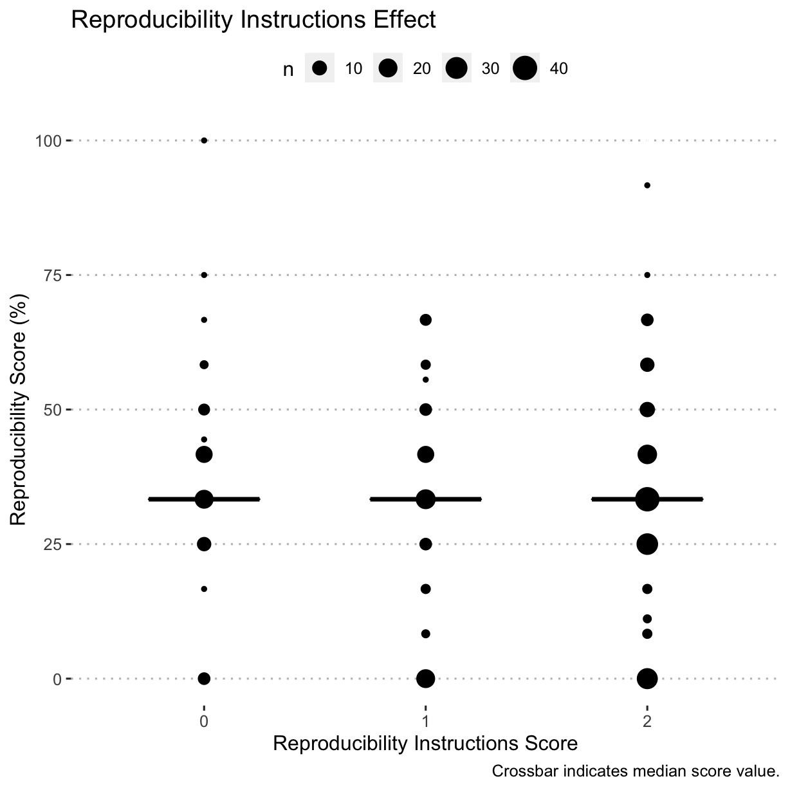

This analysis is a simple visualisation and tabulation of the data gathered from surveying 21 journals and 300 articles in the field of plant pathology for their openness and reproducibility.
Set-up Workspace
Load libraries used and setting the ggplot2 theme for the document.
library("tidyverse") #> ── Attaching packages ─────────────────────────────────────── tidyverse 1.3.0 ── #> ✔ ggplot2 3.3.0 ✔ purrr 0.3.4 #> ✔ tibble 3.0.1 ✔ dplyr 0.8.5 #> ✔ tidyr 1.0.2 ✔ stringr 1.4.0 #> ✔ readr 1.3.1 ✔ forcats 0.5.0 #> ── Conflicts ────────────────────────────────────────── tidyverse_conflicts() ── #> ✖ dplyr::filter() masks stats::filter() #> ✖ dplyr::lag() masks stats::lag() library("ggpubr") #> Loading required package: magrittr #> #> Attaching package: 'magrittr' #> The following object is masked from 'package:purrr': #> #> set_names #> The following object is masked from 'package:tidyr': #> #> extract library("janitor") #> #> Attaching package: 'janitor' #> The following objects are masked from 'package:stats': #> #> chisq.test, fisher.test library("pander") library("Reproducibility.in.Plant.Pathology") theme_set(theme_pubclean())
Import the data and calculate the reproducibility score
rrpp <- import_notes() #> Parsed with column specification: #> cols( #> .default = col_character(), #> year = col_double(), #> contains_page = col_double(), #> repro_inst = col_double(), #> molecular = col_logical(), #> software_cite = col_double(), #> software_avail = col_double(), #> comp_mthds_avail = col_double(), #> data_avail = col_double(), #> address = col_logical(), #> annote = col_logical(), #> booktitle = col_logical(), #> chapter = col_logical(), #> crossref = col_logical(), #> edition = col_logical(), #> howpublished = col_logical(), #> institution = col_logical(), #> key = col_logical(), #> note = col_logical(), #> number = col_double(), #> organization = col_logical() #> # ... with 5 more columns #> ) #> See spec(...) for full column specifications. #> Parsed with column specification: #> cols( #> Journal = col_character(), #> IF_2year = col_double(), #> IF_5year = col_double(), #> `Source: InCites Journal Citation Reports, Clarivate Analytics, 2018` = col_logical() #> )
Create a tidy data frame of the data by unnesting software used as in many cases multiple software packages were used, so will end up with multiple rows for same article, one for each software.
Visualise evaluations
Article classes
What class did the articles fall into, "Applied,
ggplot(rrpp, aes(y = art_class)) + geom_bar() + ylab("Class") + ggtitle("Article Classification")

Computational methods available
Were the computational methods, scripts, source code, etc., made available?
ggplot(rrpp, aes(y = comp_mthds_avail)) + geom_bar() + ggtitle("Computational Methods Availability") + ylab("Score") #> Warning: Removed 9 rows containing non-finite values (stat_count).
Software availability
Were the software used readily available and preferably open-source?
ggplot(rrpp, aes(y = software_avail)) + geom_bar() + ggtitle("Software Availability") + ylab("Score") #> Warning: Removed 9 rows containing non-finite values (stat_count).
Software citations
Were the software that was used properly cited?
ggplot(rrpp, aes(y = software_cite)) + geom_bar() + ggtitle("Software Cited") + ylab("Score") #> Warning: Removed 7 rows containing non-finite values (stat_count).
Software used (cited)
Count and sort top 10 software packages cited. There are likely others that are used, but they have not been properly cited or listed by the authors.
tab <- table(rrpp_software$software_used) tab_s <- sort(tab) top10 <- tail(names(tab_s), 14) # checking the table, there are several ties top_software <- subset(rrpp_software, software_used %in% top10) top_software$software_used <- factor(top_software$software_used, levels = rev(top10)) ggplot(top_software, aes(y = software_used)) + geom_bar() + ggtitle("Top 10 Software Used") + xlab("Count") + ylab("Software")

Data availability
Were the data made readily available?
ggplot(rrpp, aes(y = data_avail)) + geom_bar() + ggtitle("Data Availability") + ylab("Score") #> Warning: Removed 4 rows containing non-finite values (stat_count).

Reproducibility score
The reproducibility score was calculated as the sum of the scores for computational method availability,
ggplot(rrpp, aes(y = reproducibility_score)) + geom_bar() + ggtitle("Combined Reproducibility Score") + ylab("Score")

Article class effect on reproducibility score
ggplot(rrpp, aes(x = reproducibility_score, y = art_class)) + geom_boxplot(outlier.shape = NA) + geom_jitter(width = 0.25, alpha = 0.5) + ggtitle("Article Class Effect") + ylab("Class") + xlab("Score")
wilcox.test(reproducibility_score ~ art_class, data = rrpp) #> #> Wilcoxon rank sum test with continuity correction #> #> data: reproducibility_score by art_class #> W = 10390, p-value = 0.1858 #> alternative hypothesis: true location shift is not equal to 0
The Mann-Whitney U test indicates that the article class does not affect the assigned reproducibility score.
Journal effect on reproducibility score
ggplot(rrpp, aes(x = reproducibility_score, y = abbreviation)) + geom_count() + ggtitle("Journal Effect") + ylab("Journal") + xlab("Score")

kruskal.test(reproducibility_score ~ as.factor(abbreviation), data = rrpp) #> #> Kruskal-Wallis rank sum test #> #> data: reproducibility_score by as.factor(abbreviation) #> Kruskal-Wallis chi-squared = 26.623, df = 19, p-value = 0.1138
The Kruskal-Wallis test indicates that the journal title does not appear to have an effect on the assigned reproducibility score.
Evaluator effect on reproducibility score
ggplot(rrpp, aes(x = reproducibility_score, y = assignee)) + geom_count() + ggtitle("Evaluator Effect") + ylab("Evaluator") + xlab("Score")

kruskal.test(reproducibility_score ~ assignee, data = rrpp) #> #> Kruskal-Wallis rank sum test #> #> data: reproducibility_score by assignee #> Kruskal-Wallis chi-squared = 7.328, df = 3, p-value = 0.06215
The Kruskal-Wallis test indicates that the assigned reviewer does not have an effect on the reproducibility scores assigned.
Five year impact factor effect on reproducibility score
ggplot(rrpp, aes(x = reproducibility_score, y = IF_5year)) + geom_count() + ggtitle("Five Year IF Effect") + ylab("Impact Factor") + xlab("Score")

kruskal.test(reproducibility_score ~ IF_5year, data = rrpp) #> #> Kruskal-Wallis rank sum test #> #> data: reproducibility_score by IF_5year #> Kruskal-Wallis chi-squared = 27.989, df = 19, p-value = 0.08363
The Mann-Whitney U Test suggests that impact factor does not appear to have an effect on the reproducibility score.
Journal open access effect on reproducibility score
ggplot(rrpp, aes(x = reproducibility_score, y = open)) + geom_count() + ggtitle("Open Access Effect") + ylab("Open Access Classification") + xlab("Score")

wilcox.test(reproducibility_score ~ open, data = rrpp) #> #> Wilcoxon rank sum test with continuity correction #> #> data: reproducibility_score by open #> W = 4556, p-value = 0.6188 #> alternative hypothesis: true location shift is not equal to 0
The Mann–Whitney U test indicates that the journal’s open access status does not affect the reproducibility score.
Journal reproducibility instructions effect on reproducibility score
ggplot(rrpp, aes(x = reproducibility_score, y = as.factor(repro_inst))) + geom_boxplot(outlier.shape = NA) + geom_jitter(width = 0.25, alpha = 0.5) + ggtitle("Reproducibility Instructions Effect") + ylab("Reproducibility Instructions Score") + xlab("Score")

kruskal.test(reproducibility_score ~ as.factor(repro_inst), data = rrpp) #> #> Kruskal-Wallis rank sum test #> #> data: reproducibility_score by as.factor(repro_inst) #> Kruskal-Wallis chi-squared = 2.208, df = 2, p-value = 0.3315
The Kruskal-Wallis test indicates that the journals’ instructions for authors concerning sharing data and reproducibility have no effect on the score assigned.
Tables
Table of Journals Surveyed
rrpp_journals <- tabyl(rrpp, journal)[, -3] names(rrpp_journals) <- c("Journal", "n") pander(rrpp_journals)
| Journal | n |
|---|---|
| Australasian Plant Pathology | 8 |
| Canadian Journal of Plant Pathology | 12 |
| Crop Protection | 14 |
| European Journal of Plant Pathology | 11 |
| Forest Pathology | 14 |
| Journal of General Plant Pathology | 17 |
| Journal of Phytopathology | 14 |
| Journal of Plant Pathology | 14 |
| Molecular Plant Pathology | 18 |
| Molecular Plant-Microbe Interactions | 16 |
| Nematology | 11 |
| Physiological and Molecular Plant Pathology | 18 |
| Phytoparasitica | 19 |
| Phytopathologia Mediterranea | 9 |
| Phytopathology | 19 |
| Plant Disease | 15 |
| Plant Health Progress | 10 |
| Plant Pathology | 24 |
| Revista Mexicana de Fitopatología | 10 |
| Tropical Plant Pathology | 9 |
| Virology Journal (Plant Viruses Section) | 16 |
Table of Article Scores
article_scores <- tabyl(rrpp, reproducibility_score) names(article_scores) <- c("Score", "n", "Percent") article_scores$Percent <- round(article_scores$Percent * 100, 1) pander(article_scores)
| Score | n | Percent |
|---|---|---|
| 0 | 246 | 82.6 |
| 1 | 1 | 0.3 |
| 2 | 2 | 0.7 |
| 3 | 4 | 1.3 |
| 4 | 3 | 1 |
| 5 | 4 | 1.3 |
| 6 | 11 | 3.7 |
| 7 | 14 | 4.7 |
| 8 | 11 | 3.7 |
| 9 | 1 | 0.3 |
| 11 | 1 | 0.3 |